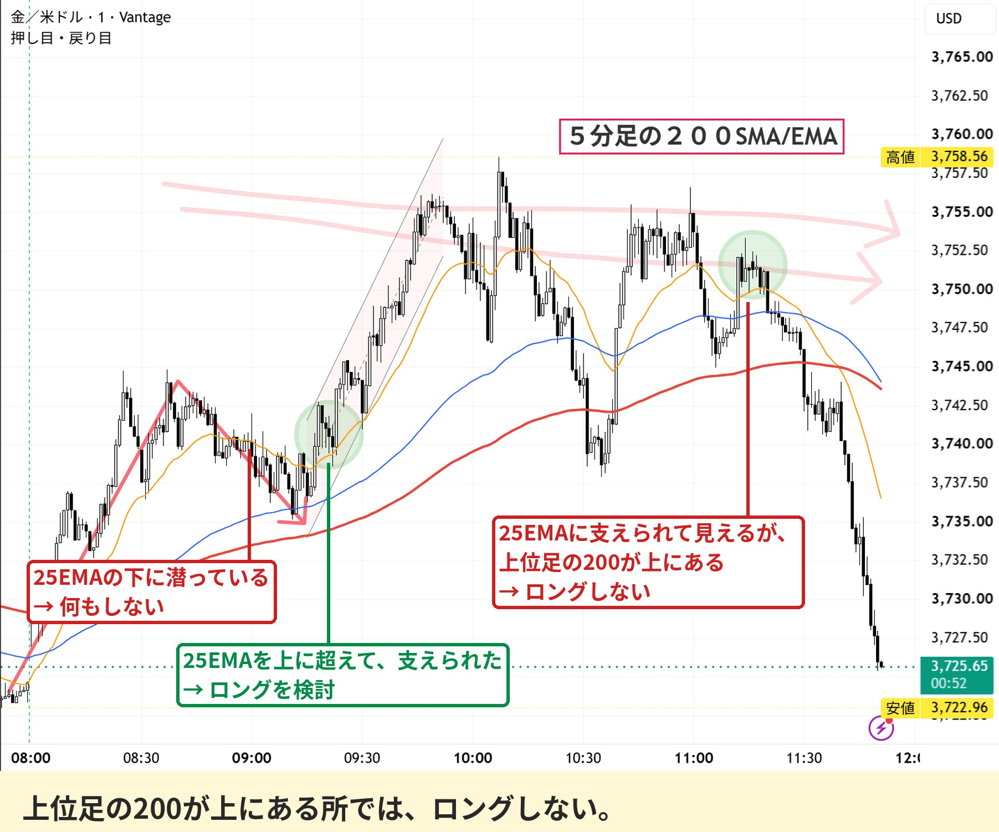
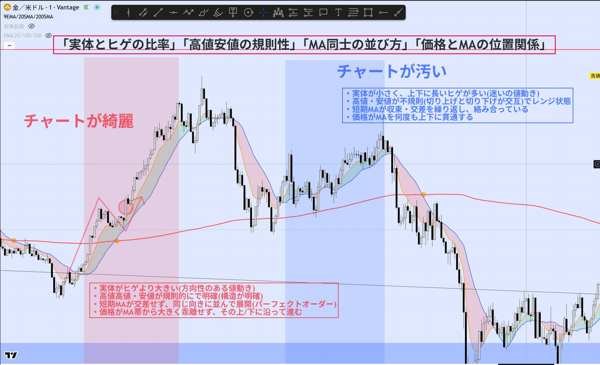
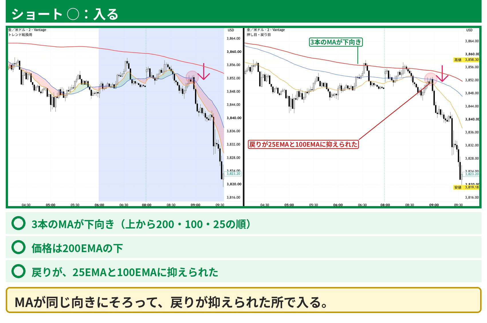
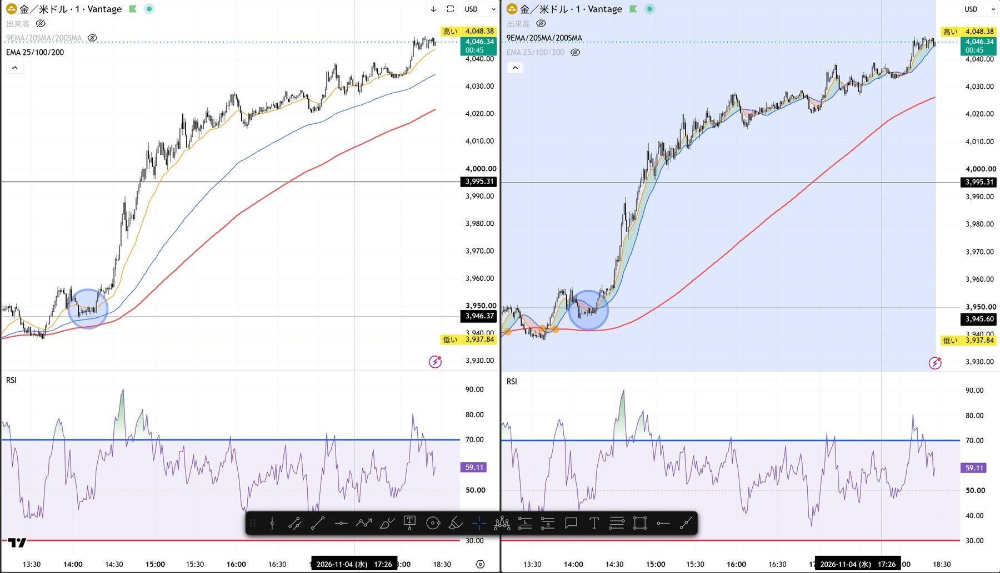

● トレード前に見ること
この順番で見ます。ひとつでも「入らない」に当てはまったら、見送ります。画像を押すと、大きく見られます。
1. 15分足を見る
箱（横ばい）か、斜めか。
○ 入る斜めなら、その向きで。箱なら、下の線の近くでロング、上の線の近くでショート。
× 入らない箱の真ん中。箱の下半分でのショート。箱の上半分でのロング。

2. 上位足の200が、壁になっていないか
入る方向の先に、5分足・15分足の200がないか。
○ 入る先に、200がない。
× 入らない上に200があるときのロング。下に200があるときのショート。

3. 形が、きれいか（3本のMAがそろっているか）
きれいな形だけ入る。汚い形は、入らない。
○ きれい（入る）
- 実体がヒゲより大きい
- 高値・安値が、規則的ではっきりしている
- 25・100・200が交差せず、同じ向きに並んで、線が開いている
- 価格が、線の帯に沿って進む
× 汚い（入らない）
- 実体が小さく、長いヒゲが多い
- 高値・安値が不規則で、レンジ
- 線が、収束・交差をくり返して、からんでいる
- 価格が、線を何度も上下に貫く


4. すぐ先に、壁や床がないか
横線、200と横線が重なる所を見る。200が水平気味なら、壁として弱く、抜けることもある。（下向きなら壁になりやすい）
○ 入る先まで、損切りの幅より広い余地がある。
× 入らない余地が、損切りの幅より小さい。赤(200)までの距離が近い。ショートのすぐ下に、200と横線が重なる所がある。

5. 入る場所
「戻り」か「支えられた所」で入る。
○ 入るショート：戻りが25・100に抑えられた所。ロング：25EMAを上に超えて、支えられた所。線を割ったあとの、戻りも入る場所。
× 入らない割れる前の、箱の中。まだ下の線まで届いていない所。



6. 入る前に、決める
損切りの位置と、ロット。
○ 入る損切りの位置を決めて、注文で入れる。切らずに持てるロットにする。
× 入らない決めずに入る。入ったあとに、損切りを動かす・手で切る。
入る場所は、はっきり決まっている。少しでも遅れたら、絶対に入らない。
○ 入る陽線を確認した足の、次の足まで。
× 入らないそれより遅い。／100EMAなど、次の線の近くまで来ている。／動き出しから、半分以上動いている。
7. 200に当たったあとに見ること
逆の向き（ロング）も、検討できるかもしれない。だから、ここを見る。
- チャネルを、絶対に引く。割れたか、割れそうなだけかを見る。
- 横軸の長さ：チャネルや戻りに、どれだけ時間をかけたか。
- 200の角度：急だったのが、緩やかになったのか。
- 25・100の角度：急か、緩やか。
- 当たった角度（25の傾き）：急に上げて当たったか、ゆっくり当たったか。
- 当たったあと、200を抜けたか、反転したか。
- 25・100が、束のままか、広がり始めたか。広がるなら、上か下か。
- 上位足（5分足など）の200の傾き。
- 抵抗帯やチャネル上限が、同じ場所に重なっていないか。